Left: our pages, rendered by tools/render_journal.py from the real addon code (test harness, classic style),
painted with the client's own textures and fonts (Friz Quadrata, Morpheus) looked up in the client listfile.
Quest and boss data are render fixtures (Deadmines names, AtlasLoot-shaped boss tables); the dungeon and boss
descriptions and abilities are the shipped Encounter Journal text (QuestSharing/DungeonLore.lua).
Scroll frames clip their children, fixed-width text wraps or ends in "..." as in the client. Rendered 2026-11-20.
Right: the matching screen of the Dungeon Journal addon, kept here as a look reference only.
The reference files live in context/renders/reference/ and are not part of the addon.
Home
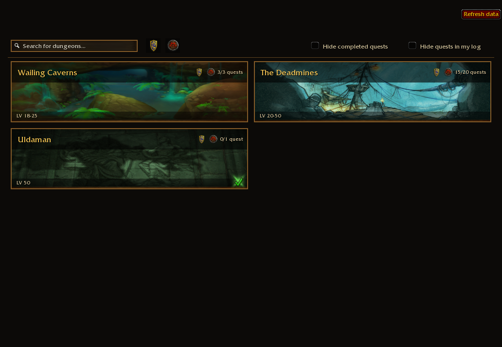
ours: home grid (2 columns, full width), search with clear button, crest filters; a done dungeon shows the tick with the star glow
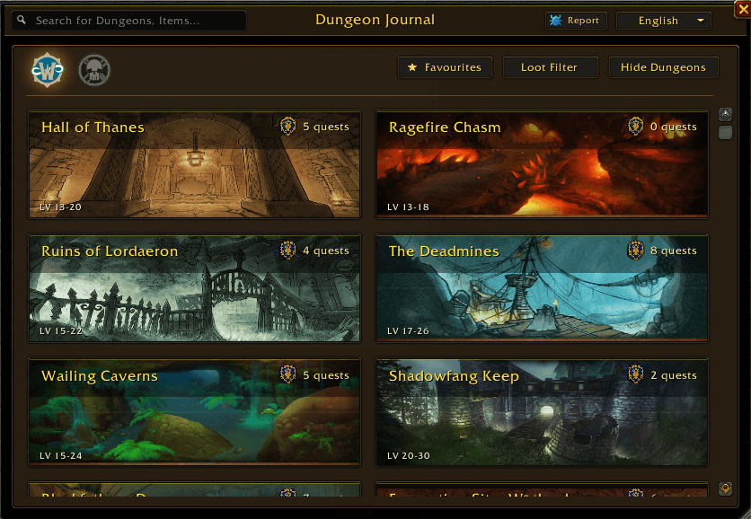
reference: Dungeon Journal by Exehn, not part of the addon
Home: searching
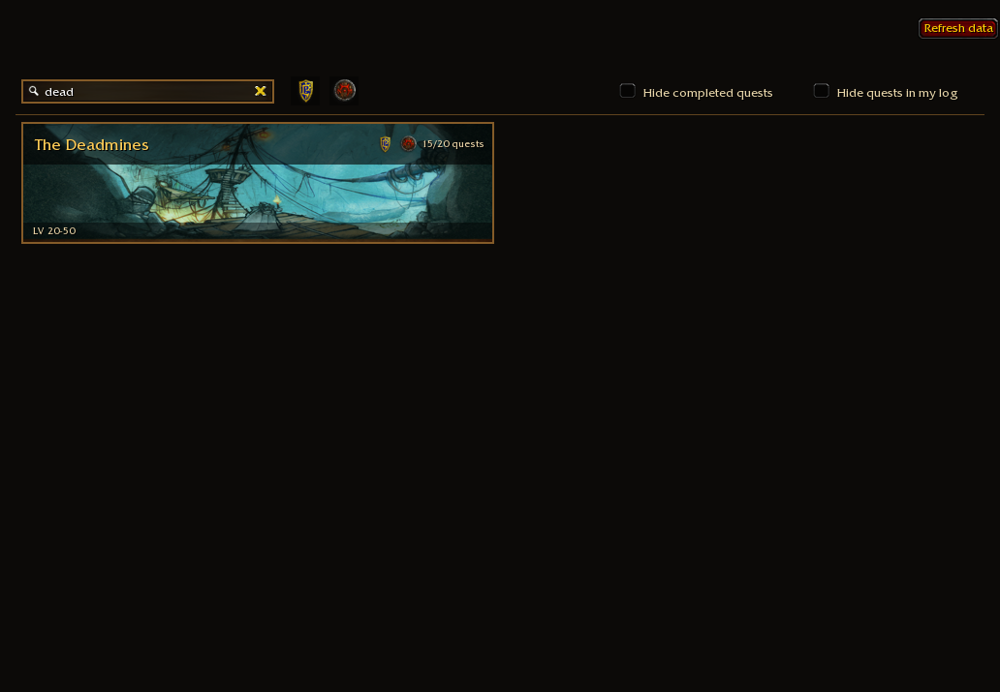
ours: "dead" typed in the search, the clear cross shows and only The Deadmines is leftreference: Dungeon Journal by Exehn, not part of the addon
Quests: a normal quest
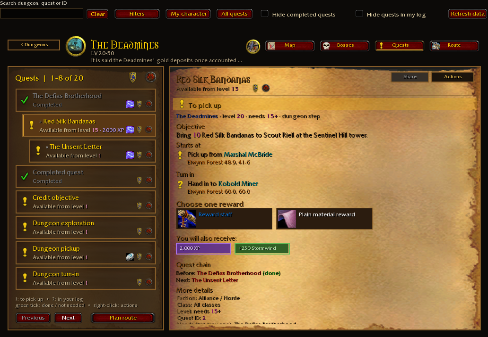
ours: one-row filter bar (Level, Class and Faction behind Filters), the journal line under the dungeon name, quest list with chain and dungeon icons, quest page with Share (grey: not in your log), rewards, XP and reputation chips, quest chain
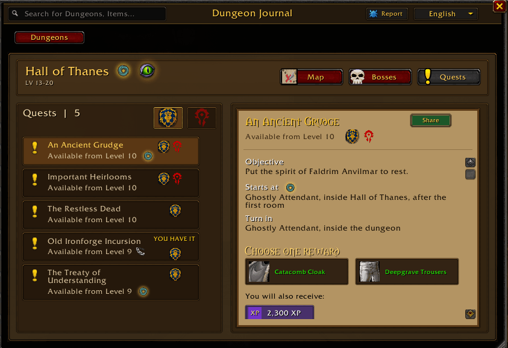
reference: Dungeon Journal by Exehn, not part of the addon
Quests: a class-only quest
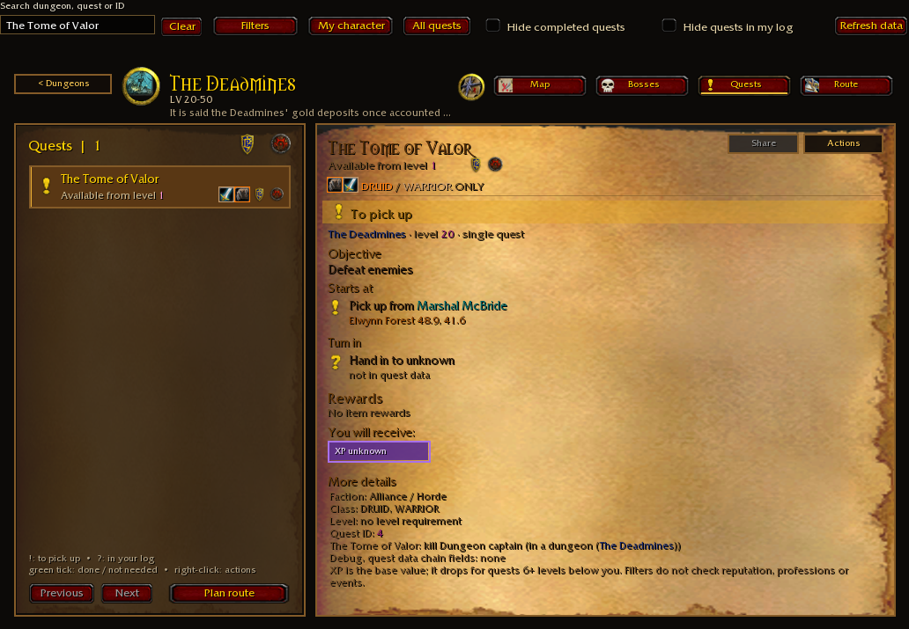
ours: "DRUID / WARRIOR ONLY" in the class colours with the class icons, class icons on the rowreference: Dungeon Journal by Exehn, not part of the addon
Quests: a done chain quest
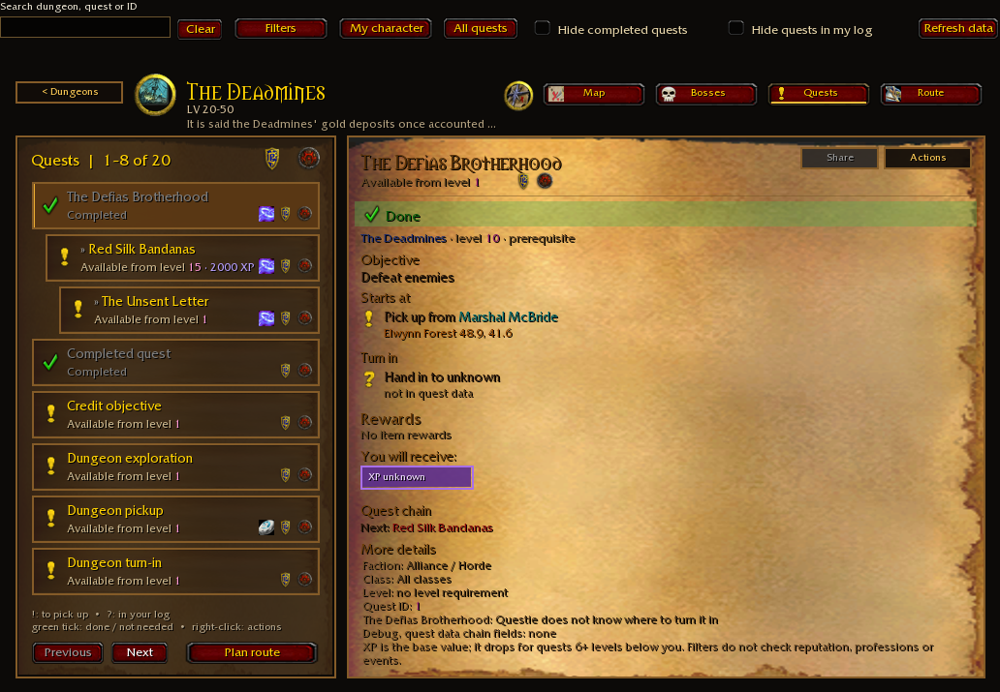
ours: the first step of a chain, done (green strip in the badge tint, tick on the row), "Next:" in the chain sectionreference: Dungeon Journal by Exehn, not part of the addon
Bosses
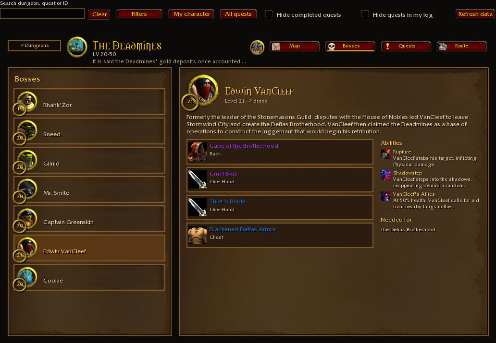
ours: bosses in encounter order with their Encounter Journal portraits and levels; Edwin VanCleef selected (as a click on an item he drops does): facts line, journal description, his drops, and beside them Abilities (spell icons, short text) and Needed for (the quest that asks you to kill him)
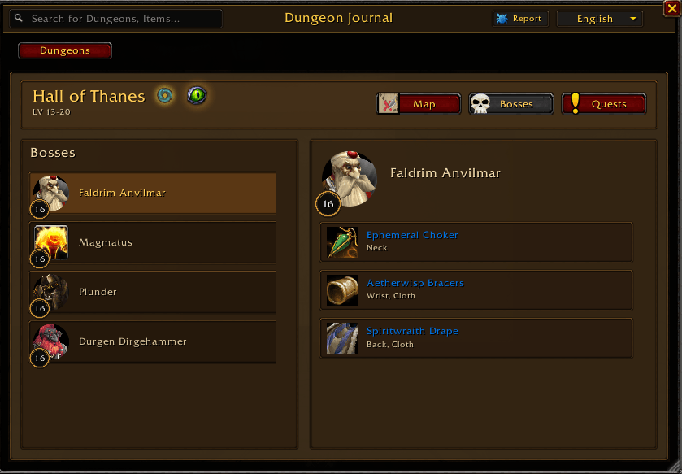
reference: Dungeon Journal by Exehn, not part of the addon
Map
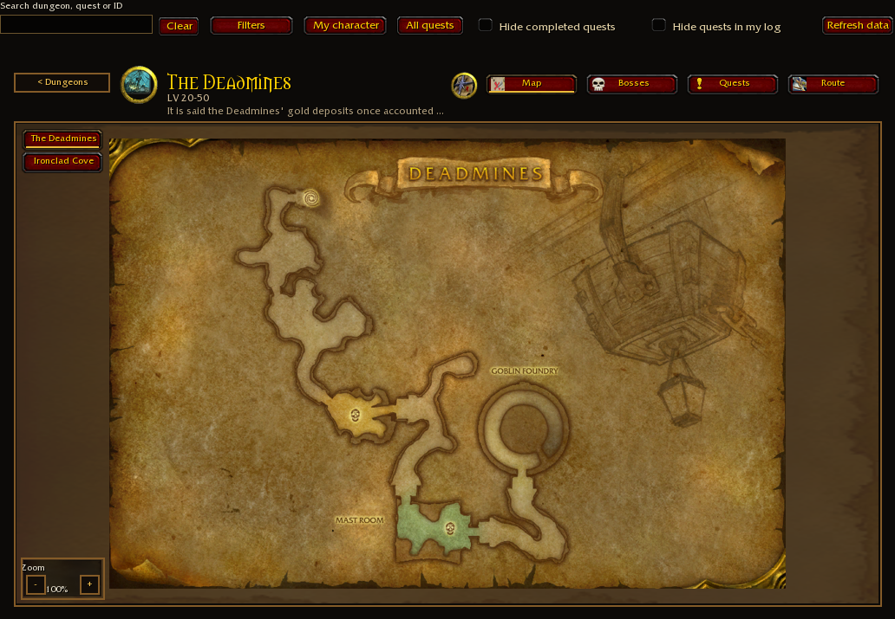
ours: the game's Deadmines map tiles, floor buttons, zoom box
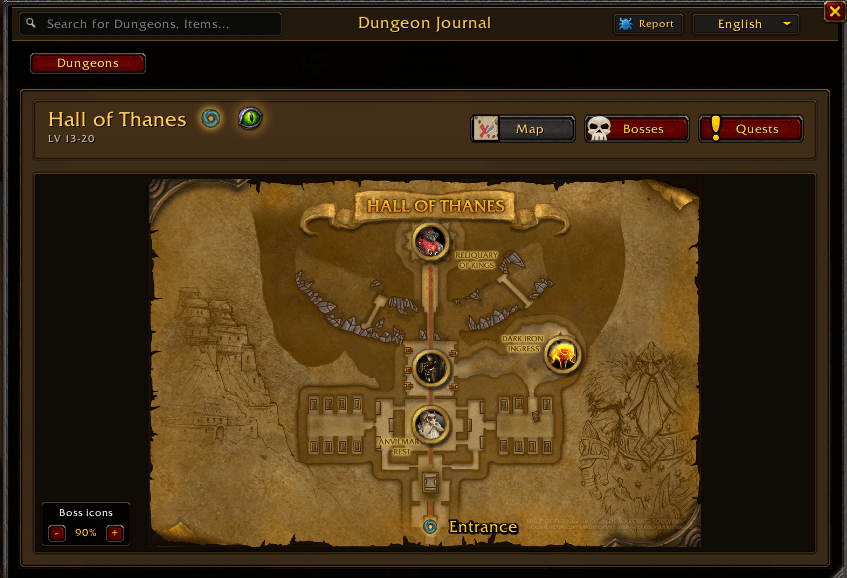
reference: Dungeon Journal by Exehn, not part of the addon
Route
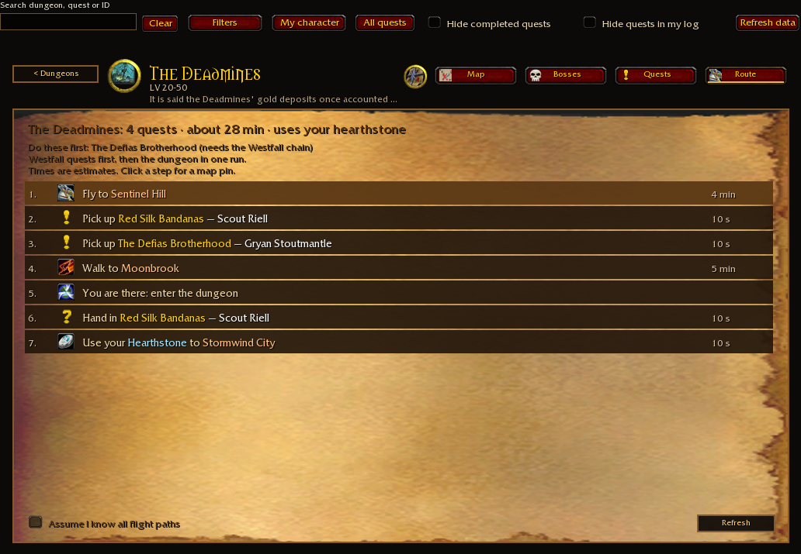
ours: the route to pick up the quests, in the page (steps from a render fixture of the planner); step 1 marked as next, dark ink on the parchment
no matching Dungeon Journal screen
Other reference screens
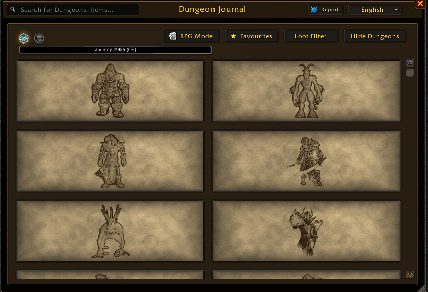
reference: Dungeon Journal by Exehn, not part of the addon (RPG mode home)
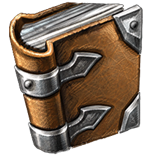
reference: Dungeon Journal by Exehn, not part of the addon (its icon)